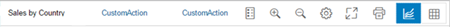

Chart Container
Chart Container
Overview
The ChartContainer supports the
sap.viz.ui5.controls.VizFrame and sap.m.Table
controls in its content area. With the toolbar, you can change the view of the
content in different ways.
For more information about the
VizFrame control, see the API Reference in the Demo Kit.
Details
-
Selection boxes in the toolbar
The control supports multiple selection boxes in the toolbar for changing dimensions, for example.
-
Content
You can switch between chart types or between a chart and a table view.
ChartContainersupports different chart and table controls, for example,vizFrameandsap.m.Table. Thesap.suite.ui.commons.ChartContainerContentcontrol is a wrapper control for the content to be displayed in theChartContainercontrol. You need to provide the title and icon properties in this control when you define the content so that it is displayed in theChartContainercontrol. -
Fullscreen mode
A fullscreen toggle button is provided in the toolbar. You can switch between fullscreen and normal mode.
-
Personalization
The control provides a personalization icon. If you press the icon, a personalization event will be fired.
-
Selection details
The Details button provides a popover that displays the details of the items selected in the chart. You can include the button into the toolbar by setting the
showSelectionDetailsproperty to true. Please note thatSelectionDetailsis only available whensap.viz.ui5.controls.VizFrameis displayed inChartContainer. -
Custom toolbar
As an app developer, you can create your own toolbar inside a
ChartContainercontrol in your application. To configure a custom toolbar, the toolbar aggregation can be set to thesap.m.OverflowToolbarcontrol that contains your preferred SAPUI5 controls. The newsap.suite.ui.commons.ChartContainerToolbarPlaceholdertype has been introduced to make the position of the embedded buttons configurable. To configure the position of the embedded buttons, you need to set the placeholder element to the required position in the aggregation.The order of the embedded buttons is set automatically by the control as shown in the image below:
The displayed toolbars below are taken from an example of the
ChartContainertoolbar withVizFrame.-
legend, zoom in, zoom out, personalization, full screen, custom icons and segmented button for content selection.

-
If a dimension selector is displayed in the chart container, it will always be displayed in the first position in the toolbar. When a dimension selector is not visible, the chart container’s title (
titleproperty ofChartContainer) will be displayed in the first position in the toolbar as shown below.
-
-
Custom Icons
You can also use custom icons. In this case, custom icons are rendered as
OverflowToolbarbuttons. But they offer less options as the custom toolbar, for example, there is no control option for the visibility.
API Reference/Samples
For more information about theChartContainer control, see the API Reference Documentation and the sample in the Demo Kit.